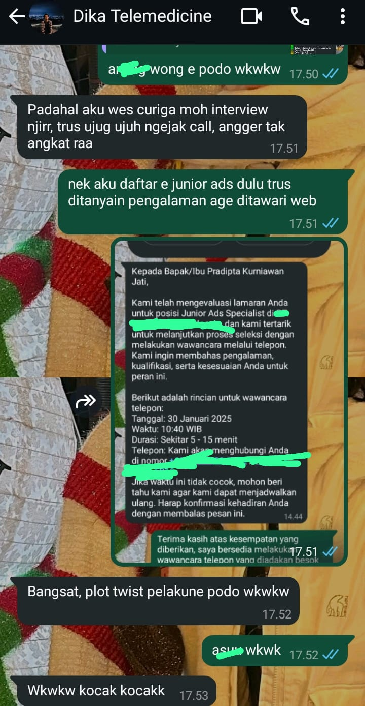

Welcome to this page, bacanya santai aja ga perlu buru-buru atau kalau udah keburu geli karna cringe langsung ke page selanjutnya aja wkkwkw
Ceritanya ga penting si tapi ga tau pengen aja cerita udah gatel
Seperti yang kamu tau aku ini kan sekarang belum ada fulltime work, masih nyari-nyari tapi sebenernya kalau mau ga pilih-pilih ada si tapi kaya ga cocok gitu dari lokasi sama salary juga. Nah, belum lama ini aku dapet panggilan kerjaan kebetulan aku daftarnya pas ngelamar itu junior ads specialist, jadi dia jobdesknya ngurusin periklanan digital gitu, di profilnya secara sekilas lumayan meyakinkan aku ga ragu langsung lamar disitu ga pake ngeliat keterangan lainnya (kaya asal apply aja gitu wkwk) akhirnya apply lah aku disitu. Abis berselang 2-3 hari aku dikontak terus dikasih jadwal untuk wawancara online, seneng ? pasti dong akhirnya setelah sekian lama sana sini ada yang nyantol dan lumayan cocok ama lokasinya wkwk. Terus, sambil nunggu jadwal itu kaya kepikiran, ini bener ga si ? secara aneh juga masa wawancara onlinenya via WhatsAPP T_T, jadinya aku pas lagi agak senggang liat lagi postingan lowongannya dan bener aja keterangan lainnya agak ga masuk akal, ga masuk akal disini bukan karena zolim atau terlalu rendah tapi "too good to be true" bayangin aja kerja masih entry level, gaji 1500usd dan ada mess, sangat meragukan bukan ? wkwk. Akhirnya aku iseng menyelam cari tahu lokasi kantornya, profil perusahaannya, sampe profil rekruter aku stalking juga supaya tau bener apa ga.
Setelah beberapa waktu menyelam hasilnya bener aja, profil perusahaannya susah dicari tapi akhirnya ketemu, ternyata perusahaannya bisa dibilang lumayan bodong, karena lokasi aslinya di Sihanoukville, di Kamboja WKWKKWKWK, padahal ya pas dilowongan itu lokasinya di Jakarta makanya aku daftar. Terus gimana dong ?, pasti ga aku lanjutin lah wkwkw, tapi aku tetep hadir wawancaranya, itung-itung latihan ngomong wkwkk. Pas diwawancara aku ditanyain pengalaman juga, setelah aku cerita-cerita mau dialihin ke divisi web developer, dengan janji diimingin gaji 2000 - 2500 usd tergantung keuangan perusahaannya, pastinya aku nolak ujung-ujungnya dan selama wawancara aku ikutin terus alurnya mau kemana kaya ditanya knowledge, cerita dikantor dulu, dll. Sampe pas mau ditutup dan bilang mau dikasih ke atasan cv dan hasil wawancaranya ke atasan aku nyela ke rekruternya untuk jangan diterusin tapi aku ngomong ga frontal banget, aku awalnya nanya lokasi dimana dan bergerak dibidang apa, rekruternya jawab jujur si dia bilang di Sihanoukville itu di kamboja dan bergerak di judol, baru setelah itu aku minta gausah diterusin karena ga bisa kerja diluar negeri(padahal mah sebenernya mau aja kalo kerjanya bener wkwk) dan bertentangan sama prinsip, akhirnya sama rekruternya ga dipermasalahin juga.
Kelanjutannya ada temen aku ngechat kaya ngomongin loker gitu, trus aku cerita dikit soal yang lamaran itu dan tau apa ?, ternyata dia juga ditawarin wkwk, dan tau plotnya apa ?, rekruter dan perusahaannya sama ama yang nawarin aku itu wkwkw, tapi dia juga nolak, nanti dibawah ada SS dikit percakapanku ama temen aku.
Udah si sampe situ aja ceritanya, ini loker gabisa aku ambil karna terlalu "too good to be true", kalaupun ini "true" dan aku ga dijadiin sandra dsb, kayanya aku gabakal bisa tidur enak juga tiap hari walaupun gajinya lumayan wkwkw, pasti kepikiran juga ujungnya-ujungnya kalo makan pake uang dari orang kena tipu/maen judol.
Kalo ada waktu atau gabut bisa lanjut ke page selanjutnya mungkin wkwkw. See ya !